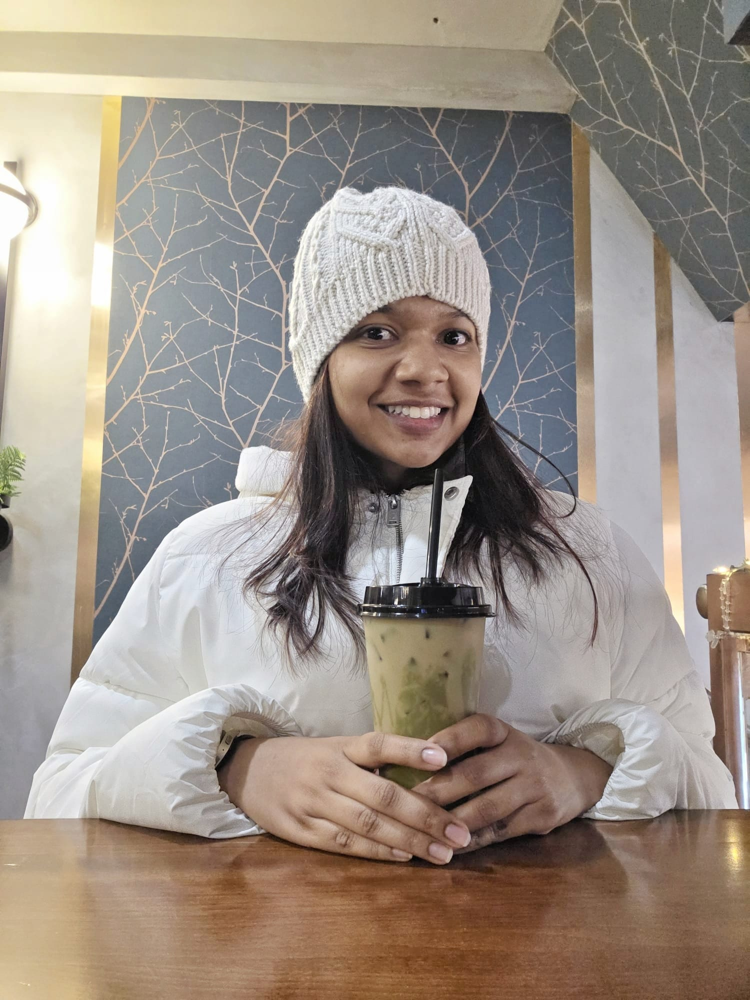

About me
I'm Aishwarya — a full stack developer who spent six years in India building backends that don't fall over and APIs that actually make sense, then packed up and moved to the US chasing a Masters degree and an adventure I wasn't going to pass up.
I don't just fix broken things — I like understanding why they broke and making them genuinely better. Distributed systems, mainframe-to-cloud migrations, iOS apps — I go where the problem is. I'm drawn to the things you can't see, and there's something satisfying about building a system no one notices — because no one noticing means nothing broke.
These days, AI is part of my toolkit the way Stack Overflow always was — a shortcut to the interesting part, not a replacement for understanding it. The fundamentals are still mine. The thinking is still mine. The low-grade anxiety about losing both? Also mine.
Fuelled by caffeine, boba, and an alarming number of pastries. I love going down the rabbit hole with science, history and etymology — the kind of tidbits that come in handy during awkward silences. Currently open to full-time roles where I can build things that matter.

My journey
From Coimbatore classrooms to global tech companies — here's the story so far.
Northeastern University
Master of Science — Computer Science
Boston, MA, USA
PayPal India Private Limited
Senior Software Engineer · Payments Domain
Chennai, India
- Designed distributed rate-limiting for high-traffic RESTful APIs in a microservices architecture, improving fault tolerance and system reliability.
- Led platform-wide JDK upgrades and increased unit test coverage, improving application performance and maintainability.
- Remediated security vulnerabilities through secure coding practices and dependency upgrades, ensuring enterprise compliance.
Walmart Global Technology Services India
Software Development Engineer III · Finance Data Services
Chennai, India
- Saved $143,000 annually through cloud cost optimization by analyzing Kubernetes resource allocation and database usage.
- Designed and integrated Disaster Recovery plans and Error Reprocessing frameworks, improving system resilience.
- Led Mainframe-to-Cloud migration implementing synchronous data persistence across SQL and NoSQL systems using Kafka and CDC connectors.
- Built and enhanced REST APIs supporting 30 TPS for onboarding new consumers and handling pipeline enhancements.
- Implemented heavy-load applications in microservice architecture and handled RCA for critical production issues.
- Wrote automation scripts to reduce man-hours on redundant operational tasks.
- Handled vulnerability fixes and compliance activities under strict deadlines.
EY Global Delivery Services
Associate Engineer · Full Stack + Native iOS Developer
Chennai, India
Consumer iOS Application
- Revamped entire consumer iOS app with best practices and modern design patterns.
- Replaced REST API usage with GraphQL integration using Apollo Client.
- Implemented MVVM, Dependency Injection, Coordinator pattern, Clean Architecture, Reactive programming with Combine, and UIKit.
Consumer Web Application
- Built backend in a 17-member team integrating Spring Boot microservices with Confluent Kafka using request-reply patterns.
- Implemented DLQ concepts for error scenarios and Spring Batch with Couchbase N1QL for data migration.
- Documented REST endpoints with Swagger.
Zilker Technology India Private Limited
Associate Consultant · Full Stack Developer
Chennai, India
Admin Portal — Energy Provider
- Built data visualizations with Chart.js for multiple metrics and statistics.
- Processed large-scale datasets with D3.js and stored data in Couchbase.
- Developed REST endpoints with multiple async operations using Promises.
Organisation Management Portal
- Built REST APIs with Spring Boot, JPA, Hibernate, Spring WebFlux, Spring Cloud and MySQL.
- Refactored codebase to improve efficiency, quality and readability.
Twitter Trend Analysis App
- Designed architecture using Spring Cloud Services and Spring Kafka.
- Built Kafka producer application routing messages across partitions based on availability.
- Processed Twitter API data for trend analysis and decision-making support.
Sri Krishna College of Engineering and Technology
Bachelor of Engineering — Electronics and Communication
Coimbatore, India